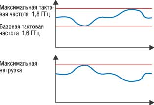

По материалам корпорации Intel (http://www.intel.com).
Ранее разработки компьютерной продукции следовали за возможностями технологии. Сегодня ситуация изменилась: во-первых, необходимо предвидеть, что хотят и в чем нуждаются пользователи, во-вторых, разработать соответствующие технологии, и в-третьих, реализовать эти новые возможности и опыт. Такой подход называется платформенным и предполагает решение пяти основных задач:
- работать напрямую с пользователями и сотрудничать с компьютерной экосистемой, чтобы понять потребности пользователей и найти новые выгодные предложения;
- понять, какие инновации внести в архитектуры платформ, в технологии и важнейшие области производства, чтобы реализовать эти выгодные предложения вместе с экосистемой;
- разработать важнейшие компоненты и убедиться, что они совместимы, сотрудничая с коллегами по экосистеме в течение всего жизненного цикла платформы;
- настроить экосистему и глобально стандартизовать важнейшие компоненты и интерфейсы, чтобы добиться максимальной прибыли для отрасли и достичь стратегических целей;
- используя важнейшие компоненты, провести интеграцию, тестирование, проверку, спланировать маркетинг и выпустить решения, которые принесут пользу потребителям.
За счет такого платформенного подхода появляются дополнительные возможности для сотрудничества с партнерами по экосистеме, чтобы ускорить внедрение инноваций. Вообще говоря, платформа - конечный результат такого целостного подхода, который приносит реальную пользу потребителям. Стоит отметить, что платформы корпорации Intel (http://www.intel.com) включают все необходимые компоненты, совместимые между собой и легко интегрируемые.
| В настоящее время эксперты Intel определяют понятие платформы следующим образом: "комплексный набор компонентов, который обеспечивает реализацию намеченных моделей использования, позволяет расширять существующие рынки и создавать новые, а также приносит пользователям гораздо больше преимуществ, чем простая сумма составных частей". |
Иными словами, платформа - это дом в целом, а не просто комплект стен, проводов и труб. Это цельная структура, спроектированная, построенная, оформленная и отделанная. В сегодняшнем мире определение платформы включает аппаратное, программное обеспечение и услуги. Например, технология Intel Centrino для мобильных ПК - это важнейшая составная часть систем, способных предоставить уникальные возможности. Однако устройства на базе этой технологии сами по себе не являются платформами; ведь платформа - это совокупность множества важных компонентов. Среди них - процессор Pentium M и совместимый с ним набор микросхем; форм-фактор, обеспечивающий малую массу, а следовательно, мобильность; технологии увеличения времени работы батарей; возможности беспроводной связи, а также интеллектуальное ПО, эффективно использующее возможности мобильных систем. Продукция на базе технологии Centrino для мобильных ПК - это не просто сумма составных частей, это комплекс, который приносит гораздо больше преимуществ пользователям.
В ближайшем будущем некоторые устройства останутся такими же, как сейчас. Но платформы зависят от все более возрастающего числа технологий - начиная от высококачественных аудио- и видеоподсистем до протоколов защиты контента (DTCP/IP) и управления. Эти технологии охватывают наборы микросхем, ПО и услуги для интеграции вычислительных систем с устройствами бытовой электроники, технологии Universal Serial Bus (USB) и Ultra Wide Band (UWB), а также отраслевые стандарты для взаимодействия компьютеров и устройств бытовой электроники. Многоядерные процессоры, многопоточные технологии и параллельное программирование обеспечат огромный рост производительности вычислений и существенное снижение потребляемой мощности. В то же время высокопроизводительные алгоритмы, такие, как распознавание, извлечение информации из данных и синтез (Recognition, Mining and Synthesis, RMS), повысят степень полезного применения собираемой, загружаемой и управляемой информации. Фактически некоторые из этих алгоритмов уже готовы для работы на платформах будущего. Так, исследовательские подразделения Intel работают над созданием технологий высококачественных массивов, которые помогут передавать голос и звук с максимальным качеством. В то же время реалистичная графика обеспечит переход к новому поколению домашних кинотеатров и компьютерных игр.
Разработано несколько поколений технологий виртуализации и управления. Они обеспечат высокую надежность, прозрачное и/или дистанционное управление, информационную безопасность. За счет сетевых технологий существенно повысится пропускная способность серверов. Исследователи также работают над технологиями извлечения информации из данных, фотореалистичной обработки изображений и обработки сигналов. Возможно, эти технологии также скоро будут реализованы в платформах Intel. В соответствии с планом разработки многоядерных процессоров, эти технологии дадут корпорации решения для перехода к полностью новому поколению платформ.
Сейчас мобильные платформы нового поколения обеспечивают высокую производительность многоядерных процессоров Intel с низким энергопотреблением. Эти платформы имеют современную систему управления охлаждением на уровне платформы, способную обеспечить время работы батарей до 6 ч, форм-факторы с малой массой и возможность прозрачных беспроводных сетевых подключений по протоколам Wi-Fi. Технологии определения местоположения позволят этим платформам распознавать контекст и обеспечат интеллектуальное поведение. Кроме того, сейчас уже ведется разработка технологии Trusted Protection Module и других технологий безопасности второго поколения, которые обеспечат самую высокую степень информационной безопасности на уровне платформы как для хранения данных, так и для коммуникаций.
Компоненты платформ Intel
Вообще говоря, в состав платформ Intel входит пять основных компонентов:
- аппаратное обеспечение (процессоры, наборы микросхем, телекоммуникационное оборудование, память, системные платы и т. д.);
- ПО, включающее операционные системы, прикладные программы, встроенное ПО и компиляторы;
- технологии - например, Hyper-Threading (HT), Intel Virtualization, Intel I/O Acceleration (Intel I/OAT), Intel Active Management (Intel AMT);
- инициативы и стандарты, такие, как Wi-Fi, WiMAX, программа проверки точек беспроводного доступа и т. п.;
- услуги - распространение цифровой мультимедийной информации, телекоммуникационные услуги, а также услуги управления системами.
Но для полного формирования платформы необходимы и внешние компоненты - стандарты, средства разработки, маркетинговые инициативы и соответствующая инфраструктура. Кроме того, Intel определила для себя пять основных областей применения платформенного подхода, которые смогут принести существенные преимущества пользователям, OEM-поставщикам, сторонним производителям, поставщикам услуг. Цифровое предприятие - это платформы, обеспечивающие комплексные решения для бизнеса, которые уменьшают совокупную стоимость владения, а также повышают степень безопасности, надежности, масштабируемости, автоматизации, управляемости и оперативности. А вот цифровой дом включает платформы для развлечений и для домашнего использования, с такими же форм-факторами, как у устройств бытовой электроники. Они обеспечивают управление мультимедийной информацией, информационную безопасность и дополнительные услуги, высококачественный звук и видео, многозадачную работу, доступ к беспроводным сетям, простоту использования, защищенность и надежность. К мобильным системам относятся платформы, которые обеспечивают взаимодействие все возрастающего числа мобильных устройств. Они просты в использовании, предоставляют расширенную производительность, высокий уровень безопасности, мобильные развлечения и многое другое. Кроме того, существуют платформы для локальных рынков, предназначенные для удовлетворения специфических потребностей конкретных рынков во всем мире, например, ПК для домашнего образования в Китае или ПК для сельских районов Индии. И наконец, есть еще цифровое здравоохранение, к которому относятся платформы для исследований в области здравоохранения, диагностики и повышения качества лечения, а также для персонального здравоохранения (например, системы предупреждения для пациентов с болезнью Альцгеймера, а также сенсорные сети, улучшающие наблюдение за пациентами). Для того чтобы платформа могла принести максимальную пользу, все эти элементы и компоненты должны быть совместимыми между собой, образуя удобную и законченную систему, ориентированную на потребности пользователя.
Преимущества для отрасли
Руководство Intel полагает, что OEM-поставщики мыслят и работают на уровне платформ. Они получают существенные преимущества, потому что в Intel знают о проблемах отрасли и предлагают им перспективные решения. До повсеместного распространения Интернета скорость внедрения инноваций была низкой, но сегодня многогранные, взаимозависимые технологии охватывают все секторы отрасли. Платформенный подход позволит выйти на новый уровень инноваций, которые уже существенно влияют на экономику и предоставляют огромные преимущества для отрасли в целом.
Стоит еще раз подчеркнуть, что платформы Intel - это именно комплекс взаимосвязанных компонентов, которые рассчитаны на определенную модель использования. Они формируют хорошо структурированную базу для удовлетворения потребностей потребителей. Эта база обеспечивает гибкость OEM-поставщикам и независимым производителям ПО, позволяя им создавать свои собственные решения на базе предложений Intel. Например, OEM-поставщики могут предлагать собственные решения для доступа к сетям Wi-Fi, отвечающие определенной модели использования.
В соответствии с таким подходом платформенные технологии Intel предоставляют широкие возможности, позволяя повысить производительность и сократить совокупную стоимость владения системами. Это особенно важно для ИТ-менеджеров. Например, технология ускорения ввода-вывода Intel Input/Output Acceleration существенно повышает скорость передачи пакетов, что позволяет сократить расходы на то, чтобы избавиться от узких мест для увеличения скорости передачи данных. В свою очередь, технология Intel Active Management дает возможность ИТ-службам управлять сетевыми системами дистанционно, даже в тех случаях, если компьютер выключен или его ОС неработоспособна. А вот технология Intel Virtualization позволяет устанавливать новые версии ПО и обновления безопасности, переносить приложения с одной виртуальной системы на другую, не прерывая работы. Технология информационной безопасности (LaGrande) предоставляет методы защиты от несанкционированного вмешательства для обеспечения безопасности сетей и улучшения управления ими. Эти и другие платформенные технологии - существенный шаг вперед с точки зрения производительности, обслуживания систем и управления ими.
Интеграция общих функций (таких, как безопасность и управление устройствами) в базовые компоненты позволила Intel снять с OEM-производителей бремя проблем, связанных с различиями разных платформ. OEM-производители теперь могут внедрять свои инновации и планировать бюджет на разработку, чтобы быстрее создавать новую инновационную продукцию и выходить с ней на рынок.
Благодаря тому, что такие функции, как возможность беспроводных подключений и информационная безопасность, интегрированы в базовую платформу и имеют низкую себестоимость, представителям отрасли стало гораздо проще создавать платформы, ориентированные на потребности конкретных слоев общества. Эффект масштаба действует как в развитых, так и в развивающихся странах. Например, "сельские" ПК Intel в Индии призваны решить общую проблему сельских районов Индии - недостаточное развитие энергетической инфраструктуры, и они могут работать от автомобильных аккумуляторов. Постоянные проблемы с пылью в этой стране решаются путем разработки специальных корпусов, не пропускающих микрочастицы вещества. ПК Intel для домашнего образования в Китае и платформы iCafe - еще один пример решения проблем конкретных рынков.
| Платформенный подход Intel позволяет OEM-производителям и другим партнерам предлагать платформы, специально нацеленные на определенные сектора рынка, что существенно снижает так называемое цифровое неравенство. Intel обладает достаточной компетентностью, финансовыми ресурсами, а также приняла на себя обязательства по проведению исследований, необходимых для успешного решения этих проблем, и предлагает дифференцированную продукцию, соответствующую ценовым ориентирам пользователей. |
Широкие возможности подобного подхода создают основу для создания необычных моделей использования и даже для новых отраслей. Например, мобильные технологии Intel стимулировали развитие абсолютно новой отрасли: создания и управления беспроводными точками доступа. Вначале беспроводной доступ был организован в университетах и аэропортах, Интернет-кафе и ресторанах, а теперь и другие организации и компании предлагают пользователям точки доступа, позволяющие им дольше оставаться на связи. Число провайдеров точек доступа постоянно растет, создаются новые рабочие места, и количество предложений услуг ежемесячно увеличивается. Сегодня не только многие офисные здания стали беспроводными - все больше людей устанавливают беспроводные локальные сети в своих домах.
Новые вычислительные возможности создают основу для новых моделей использования и новых бизнес-моделей, таких, как определение местоположения, беспроводная связь в самолетах и развлечения в пути - эти модели уже на подходе. Понятно, что платформенный подход, основной принцип которого - вычисления, ориентированные на пользователя, открывает новые перспективы и возможности как для бизнеса, так и для индивидуальных пользователей.
Технология Intel Virtualization
Виртуализация - ключевая платформенная технология. Как известно, виртуализация обеспечивает высокий уровень работоспособности и безопасности благодаря таким базовым возможностям, как локализация неисправностей, гибкая обработка отказов и разные уровни безопасности. Известно, что типичная ИТ-организация только на управление системами и приложениями тратит большую часть своего бюджета. В обычном центре обработки данных, как правило, установлено множество серверов с низкой степенью загруженности. Раньше в ИТ-организациях следовали принципу, согласно которому на каждом сервере работало только одно приложение. Благодаря доступности серверов на базе отраслевых стандартов эта стратегия была экономически оправданной, упрощала развертывание и позволяла избежать возможных конфликтов ПО. Однако, по ряду оценок, за последние десять лет количество серверов возросло примерно в 150 раз, соответственно увеличились и расходы на сопровождение таких систем. Средняя производительность серверов также выросла - сегодня они стали гораздо мощнее, чем несколько лет назад. Виртуализация поможет ИТ-организациям получить преимущества от этой дополнительной мощности за счет консолидации множества приложений и ОС на единой платформе. Это повышает степень полезной загрузки серверов, упрощает сопровождение и снижает расходы на электропитание и охлаждение. Сегодняшние решения также обеспечивают гибкое распределение ресурсов, чтобы справиться с неожиданными изменениями рабочей нагрузки. Благодаря этим возможностям многие ИТ-организации уже понимают, что они смогут сократить свои расходы, связанные с компьютерами (как капитальные, так и эксплуатационные), и в то же время существенно повысить маневренность центров обработки данных.
Практика показывает, что большинство отказов приложений случается из-за ошибок ПО. Напомним, что виртуализация может обеспечить логическое разделение виртуальных разделов, поэтому программный сбой в одном разделе никак не повлияет на работу приложения в другом разделе. Логическое разделение также позволяет защищаться от внешних атак, что повышает безопасность консолидированных сред. Кроме того, виртуальные разделы можно настроить так, чтобы обеспечить автоматическую обработку отказов для одного или нескольких приложений. Благодаря средствам обеспечения высокой степени работоспособности, заложенным сейчас в платформы на базе процессоров Itanium 2 и Xeon, требуемый уровень услуг часто можно обеспечить, предусмотрев аварийный раздел на той же платформе, где работает основное приложение. Если требуется еще более высокий уровень работоспособности, аварийный раздел лучше разместить на отдельной платформе.
Для каждой виртуальной машины можно установить разные настройки безопасности. Это позволяет организациям обеспечить высокий уровень контроля за пользователями и гибкое распределение административных привилегий. Важнейшее преимущество виртуализации заключается еще и в том, что она упрощает миграцию имеющихся приложений на новые платформы с целью повысить производительность, надежность и управляемость. Вместо миграции на новую операционную систему приложение вместе с существующей ОС можно разместить в виртуальном разделе новой платформы, что не требует модификации ПО. Эта стратегия обычно применяется, чтобы продлить срок службы существующих приложений за относительно небольшую цену и с меньшими рисками.
Похожие преимущества предоставляет виртуализация для сред разработки и тестирования ПО. Различные этапы цикла создания ПО, включая получение рабочей версии, можно выполнять в разных виртуальных разделах одной и той же платформы. Это поможет повысить степень загруженности аппаратного обеспечения и упростить управление жизненным циклом. Во многих случаях ИТ-организации получат возможность тестировать новые и модернизированные решения на имеющихся рабочих платформах, не прерывая производственный процесс. Это не только упрощает миграцию, но сокращает расходы, устраняя необходимость дублирования вычислительной среды. Гораздо проще создать новый виртуальный раздел или изменить его параметры, чем закупить и подготовить к работе новую аппаратную платформу. Сегодняшние решения для автоматизации развертывания создают дополнительные преимущества и позволяют существенно улучшить способность ИТ к реагированию. Компании будут разворачивать меньше платформ и использовать их более гибко для удовлетворения своих меняющихся потребностей.
| Технология Intel Virtualization - только первый шаг корпорации в серии инноваций в области платформ, которые улучшат поддержку современных решений для виртуализации. В Intel уверены, что именно концепция виртуализации платформ способна обеспечить путь в будущее для мощных, автономных и надежных компьютерных систем. |
Для работы микропроцессоров будущего потребуется несколько уровней виртуализации. Например, виртуализация необходима для того, чтобы скрыть сложную структуру аппаратного обеспечения от соответствующего ПО. Сама ОС, ее ядро и ПО не должны "задумываться" о замысловатости платформы - о множестве ядер, специализированном аппаратном обеспечении, модулях кэш-памяти, средствах реконфигурирования и т. п. Наоборот, они должны "видеть" процессор как набор унифицированных виртуальных машин с глобальными интерфейсами. Необходимый уровень абстракции должна предоставить именно виртуализация.
Виртуализацию платформ можно определить как создание логически разделенных вычислительных систем, которые работают на реальных платформах. Если применять виртуализацию к дисковой памяти и серверам, концепция виртуализации платформ идет глубже и включает все уровни системы - от прикладных программ и операционной системы до компонентов платформы, процессоров и средств связи. Виртуальные платформы легко воспринимаются пользователями и работают, как обычные компьютеры. Благодаря тому что они абстрактны и отделены от физических платформ и друг от друга, виртуальные платформы обеспечивают простую переносимость, в высшей степени интеллектуальное функционирование и способность скрыть от пользователя свою сложность, повышая в то же время надежность системы. Виртуализация предоставляет способ создания менее сложных систем, которые превращают компьютеры в более управляемые объекты. Кроме того, такое разделение обеспечивает больший уровень безопасности систем, сетей и приложений благодаря изоляции потенциально опасных подсистем от системных ресурсов низкого уровня и от других виртуальных платформ.
Технология виртуализации уже изменила способы развертывания систем и приложений и управления ими. Например, виртуализация серверов обеспечивает гибкую и защищенную консолидацию множества ОС и приложений на единой платформе. Это помогает предотвратить быстрое разрастание серверного парка, повысить степень полезной загрузки ресурсов, упростить ИТ-инфраструктуру, снизить расходы на управление. В сочетании с инструментами для быстрого развертывания ПО виртуализация также позволяет организовать быстрое и динамичное управление аппаратными ресурсами, чтобы оперативно реагировать на изменения рабочей нагрузки. Эти возможности могут принести существенную выгоду многим компаниям, и их широкое распространение ожидается в течение ближайших нескольких лет.
Технология Intel Virtualization (ранее известная как Vanderpool) предоставляет аппаратную поддержку, основное назначение которой - повысить эффективность сегодняшних решений для виртуализации, реализованных программно. Это расширение архитектуры Intel поможет ИТ-организациям:
- сократить расходы и риски при внедрении серверных решений для виртуализации;
- повысить надежность, работоспособность и защищенность приложений, работающих в виртуальных разделах;
- улучшить взаимодействие с имеющимся ПО.
Технология Intel Virtualization также упрощает разработку ПО для виртуализации, что будет способствовать скорейшему внедрению инноваций. В настоящее время Intel сотрудничает с ведущими производителями, чтобы ускорить выпуск ПО для виртуализации нового поколения, которое обеспечит эффективное использование новых расширений архитектуры. Виртуализация - развивающаяся технология, и корпорация берет на себя обязательства по включению самых передовых в отрасли возможностей виртуализации в архитектуру Intel. Эти возможности будут дополнять ряд других инноваций для платформ Intel, нацеленных на решение некоторых сегодняшних наиболее важных ИТ-задач. В комплексе эти технологии предназначены для повышения гибкости, надежности, безопасности и управляемости решений на базе архитектуры Intel, а в конечном счете - для предоставления бизнес-преимуществ в широком диапазоне ИТ-потребностей. Так, многоядерная архитектура платформ Intel в сочетании с технологией Virtualization Technology позволяет создавать виртуальные независимые разделы ПО с обработкой на отдельных ядрах процессора. Таким образом, пользователи смогут создавать уникальную программно-аппаратную конфигурацию в рамках одного сервера и/или ПК для решения любых специализированных задач.
Технология виртуализации следующего поколенияВ рамках весеннего IDF нынешнего года корпорация Intel поделилась информацией о технологии Intel Virtualization Technology (Intel VT) для корпоративных серверов. Поставлять процессоры с поддержкой технологии Intel VT корпорация начала в прошлом году. Технология виртуализации следующего поколения, которая называется Intel Virtualization Technology for Directed I/O (Intel VT-d), будет включать средства виртуализации ввода-вывода, позволяющие назначать устройства ввода-вывода виртуальным машинам, благодаря чему компании получат в свое распоряжение более надежную и производительную платформу для виртуализованных систем. В 2006 г. компания VMware (http://www.wmware.com) планирует реализовать поддержку технологии Intel VT во всех своих корпоративных решениях для виртуализации, включая ESX Server. В настоящее время в число таких решений VMware входят Workstation 5.5 и VMware Server, а во второй половине 2006 г. компания планирует интегрировать поддержку технологии Intel VT в производственные системы. Стоит также отметить, что Intel и VMware начинают обширную программу совместного маркетинга, направленную на распространение средств виртуализации серверов. В 2007 г. VMware реализует в своей продукции поддержку новой технологии виртуализации Intel VT-d.
|
Оптимизация производительности и энергопотребления
Новая технология Intel под кодовым наименованием Foxton предоставляет механизм, настраивающий тактовую частоту ядра процессора Intel Itanium 2 в зависимости от рабочей нагрузки, чтобы предоставить максимальную вычислительную мощность каждому исполняемому приложению в пределах допустимого энергопотребления. Впервые эта функциональная возможность появилась в двухъядерном процессоре Intel Itanium под кодовым наименованием Montecito. Она в корне меняет подход, при котором разработчики учитывают тактовую частоту как необходимый фактор при разработке программного и аппаратного обеспечения.
Как известно, производители микросхем выпускают микропроцессоры с самыми разными тактовыми частотами. Несмотря на то, что энергопотребление - всего один из параметров, которые определяют тактовую частоту вычислительного ядра микропроцессора, оно играет значительную роль для вычислений с плавающей точкой, которые чаще всего встречаются в научных и технических приложениях, а также при обработке изображений и при решении других задач с высокой интенсивностью вычислений. Напротив, для целочисленных вычислений энергопотребление играет меньшую роль. К таким вычислениям относится значительная часть корпоративных приложений - базы данных, планирование и управление ресурсами предприятия, а также интеллектуальные ресурсы предприятия. Такие приложения не задействуют ресурсы процессора целиком и в конечном счете используют меньшие вычислительные мощности, чем те, которые могли бы им быть предоставлены.
| Технология Foxtron помогает повысить быстродействие приложений и максимально эффективно использовать электроэнергию. Данная технология постоянно "следит" за энергопотреблением процессора, регулируя соответствующим образом частоту последнего. |
Для того чтобы разрешить эту проблему, специалисты Intel разработали технологию, которая позволяет при необходимости регулировать тактовую частоту от базовой до максимальной, в зависимости от выполняемых приложений. Для приложений, требующих больших энергозатрат, например, для вычислений с плавающей точкой, обычно устанавливается базовая тактовая частота, а для приложений, не требующих высокого энергопотребления, например, для целочисленных вычислений, процессор может работать с тактовой частотой, превышающей номинальное значение. Например, процессор с базовой тактовой частотой 1,6 ГГц может работать на максимальной тактовой частоте 1,8 ГГц, в зависимости от энергопотребления выполняемых приложений. Этот подход и стал известен как технология Foxton (см. рисунок).
|  | Принцип технологии Foxton.
|
В процессоре с технологией Foxton предусмотрены встроенные измерительные схемы (вольтметр и амперметр), которые каждые 8 мкс оценивают потребляемую мощность, позволяя изменять тактовую частоту процессора в соответствии с полученными параметрами. Если потребляемая мощность при работе приложений меньше той, на которую рассчитан процессор, его тактовая частота ступенчато повышается (одна ступень равна примерно 1% частоты) до тех пор, пока не будет достигнут порог энергопотребления или максимальное значение тактовой частоты. Наоборот, если потребляемая мощность при работе приложений превышает ту, на которую рассчитан процессор, технология Foxton будет уменьшать тактовую частоту до тех пор, пока процессор не вернется в рамки допустимого энергопотребления или не будет достигнуто базовое значение тактовой частоты. Идея данной технологии заключается в том, чтобы добиться максимальной производительности процессора при выполнении каждой операции, а также повысить среднюю производительность на каждый ватт потребляемой мощности.
Технология Foxton призвана повысить производительность работы всех приложений, но в целом за ее счет бизнес-приложения получают больше преимуществ по сравнению с техническими приложениями. Это происходит из-за того, что при работе бизнес-приложений, наиболее распространенных в корпоративной вычислительной среде, задействовано меньше компонентов процессора, чем при работе технических приложений, следовательно, энергопотребление тоже уменьшается.
Вообще говоря, идея, на которой основана технология Foxton, далеко не нова, но до последнего времени возникали трудности в реализации такого типа технологий. Одна из проблем заключалась в динамической природе внутренней компоновки процессоров. Из-за нагрева при работе сопротивление внутренних компонентов микросхемы постоянно изменяется, что затрудняет измерение напряжения и силы тока и не позволяет точно настроить тактовую частоту. Чтобы устранить эту проблему, специалисты Intel разработали специальную измерительную схему, которая предусматривает постоянную рекалибровку для новых значений сопротивления.
Еще одна проблема связана с тактовым генератором процессора, который синхронизирует работу всех транзисторов (а их, например, в процессоре Montecito 1,72 млрд) и регулирует процессы обработки и обмена данными. Кстати, в любом процессоре эта проблема усугубляется наличием технологии Hyper-Threading, а также его двухъядерной структурой. Для разрешения этой проблемы Intel разработала тактовый генератор с развитыми возможностями подстройки, а также методику взаимодействия с арбитром системной шины, работающим на фиксированной частоте, которая обеспечивает фиксированный частотный коэффициент при обмене данными между арбитром и шиной.
Преимущества платформ Intel
Многоядерность - это не просто особенность нового поколения процессоров. Это огромный технологический скачок, который будет определять направление развития вычислений в ближайшие несколько лет. Но чтобы получить все преимущества многоядерности, недостаточно одного только процессора самого по себе. Чтобы максимально использовать этот скачок, необходим именно платформенный подход - новые наборы микросхем, компонентов, сопутствующих технологий, ПО, а также отраслевая экосистема.
Пожалуй, ни одна компания не занимает такой выгодной позиции, чтобы возглавить разработку платформ, как Intel. Лидерство корпорации в отрасли, ее обязательства по инвестированию в исследования и разработки, знание всех секторов рынка, а также долгая история сотрудничества с другими лидерами отрасли ставят Intel в уникальное положение, позволяющее возглавить переход на платформы на базе многоядерных процессоров. Надо отметить, что корпорация лидирует и в производственных технологиях, а кроме того, обладает достаточными производственными мощностями, чтобы запустить крупносерийное производство сначала двухъядерных, а потом и многоядерных процессоров для всех сегментов рынка. По прогнозам Intel, к концу этого года более 85% выпускаемых ею серверных процессоров, а также более 70% процессоров для настольных и мобильных ПК станут двухъядерными.
Внедрение инновационных технологий и ориентация на платформу в целом позволят Intel сделать максимально выгодным применение компьютеров будущего во всех секторах, а также претворить в жизнь множество новейших моделей использования. В сочетании с многоядерными процессорами эти новые функциональные возможности помогут сократить затраты и свести к минимуму риски при переходе на многоядерные архитектуры компьютеров. Они также создадут гибкую, основанную на стандартах основу для будущих инноваций в области платформ, ИТ и бизнеса.
Как известно, Intel сотрудничает с ведущими производителями ПО и с другими партнерами по экосистеме в области разработки приложений для работы в многопоточной среде. В результате корпорация разработала передовые инструменты, ресурсы, приобрела опыт и завела отношения с партнерами, которые станут движущей силой перевода широкого спектра бизнес-приложений на многопоточный режим работы. Корпорация продолжает эту деятельность, работая с ведущими разработчиками и учеными, чтобы их приложения могли использовать все преимущества многоядерных платформ Intel.
| Новые инструментальные средства, адаптивные библиотеки и другие элементы инфраструктуры обеспечат дальнейшее развитие отрасли, чтобы полностью реализовать преимущества от возрастающих возможностей платформ, а также работу сотен и даже тысяч потоков в процессорах будущего. |
Прогресс в этом направлении уже есть. ОС Microsoft Windows XP, Windows Server, различные версии Linux, а также другое ПО уже позволяют получать преимущества от технологии Hyper-Threading и многоядерных процессоров Intel. Кроме того, корпорация сотрудничает с сотнями независимых производителей ПО, чтобы адаптировать их приложения к технологии Hyper-Threading, и планирует сотрудничать дальше, чтобы получить уверенность в том, что их приложения будут эффективно работать и на многоядерных платформах Intel.
Перед специальным подразделением Software and Solutions Group (SSG) поставлена задача - оказывать помощь сторонним производителям ПО и разработчикам решений, чтобы они могли оптимизировать свою продукцию для многоядерных платформ Intel. Группа SSG разработала программу перехода на многопоточные вычисления, а также надежный комплект инструментов, компиляторов и средств измерения производительности, которые позволят разработчикам ПО адаптировать свои программы таким образом, чтобы получать преимущества от внедрения параллелизма на уровне потоков. Сделаны также крупные инвестиции в центры решений Intel (которых в мире уже 15). В этих центрах поставщики приложений могут работать в своем регионе, оптимизируя свою продукцию для работы с новейшими технологиями Intel. Программный колледж Intel и университетская программа - очередные примеры этой деятельности.
Надо заметить, что стратегическое решение Intel инвестировать 28 млрд долл. в исследования и разработки новых возможностей (в период с 2001 по 2003 г.) значительно продвинуло производственные технологии и позволило спроектировать и выпустить многоядерные однокристальные процессоры, которые уже могут производиться серийно. Дальнейшие инвестиции, сделанные в 2004-2005 гг., подтвердили, что Intel выполняет взятые на себя обязательства и может принести огромную пользу во всех секторах рынка за приемлемую цену благодаря многоядерным вычислениям. Успех перехода Intel на многоядерную продукцию и быстрое развитие рынка гарантируется внедрением передовых производственных процессов (таких, как 300-мм подложки, 90-нм и 65-нм производственные технологии), а также развитыми производственными мощностями.
Эта деятельность имеет жизненно важное значение: ведь чтобы достичь уровня производительности, которого хотят пользователи, разработать дружественные интерфейсы и обеспечить реальное распознавание речи, необходимо помочь разработчикам в изменении всех видов алгоритмов для параллельной работы. Intel ведет активную деятельность через свои исследовательские и производственные группы, чтобы решить эти проблемы. Стратегическая инвестиционная программа Intel Capital также инвестирует сотни миллионов долларов в компании, чья продукция и услуги дополняют возможности собственной продукции корпорации. Другая деятельность Intel по развитию экосистемы включает спонсорство Форума Intel для разработчиков IDF - ежегодной серии всемирных конференций, которые освещают направления развития будущих технологий Intel и помогают сообществу разработчиков в обмене знаниями, идеями и продукцией.
В области многоядерных платформ Intel добилась впечатляющих результатов. В то время как объемы и сложность данных непрерывно растут, важность этих платформ все более повышается. Они становятся стимулом для разработки новых приложений, которые принесут преимущества во всех областях - от медицины до ИТ, от цифрового офиса до цифрового дома, от мобильных решений до новейших игр.
***
Приход цифровой эры характеризуется появлением все более сложных технологий, и на первый план выходит проблема создания целостных платформ для их реализации. Каждый день появляются самые разнообразные модели использования ИТ. Поэтому современные вычислительные решения должны быть более мощными и гибкими, иметь встроенные средства защиты, выполнять самообслуживание, быть простыми в использовании и модернизации. Платформы будущего должны уметь обрабатывать постоянно возрастающие объемы информации, обеспечивать повсеместные сетевые подключения, иметь дружественные пользовательские интерфейсы. Это позволит создавать на их основе более простые и полностью персонифицированные пользовательские устройства. Корпорация Intel ведет за собой разработку платформ и всю экосистему, строя свою работу на понимании потребностей пользователей и удовлетворении этих потребностей.